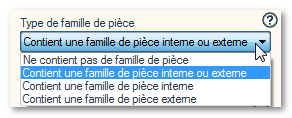

Le document testé est une pièce ou un assemblage. 
Applique l'opération en fonction de la table de famille.

Les configurations, pilotant les différentes formes ou les différents états des pièces et des assemblages, peuvent être gérées par une famille de pièce. Cette famille de pièce est généralement définie par une table Excel pouvant être encapsulée dans le fichier SOLIDWORKS ou bien pouvant pointer sur un fichier externe. La liste déroulante permet donc de traiter le document SOLIDWORKS en fonction de cette table Excel.